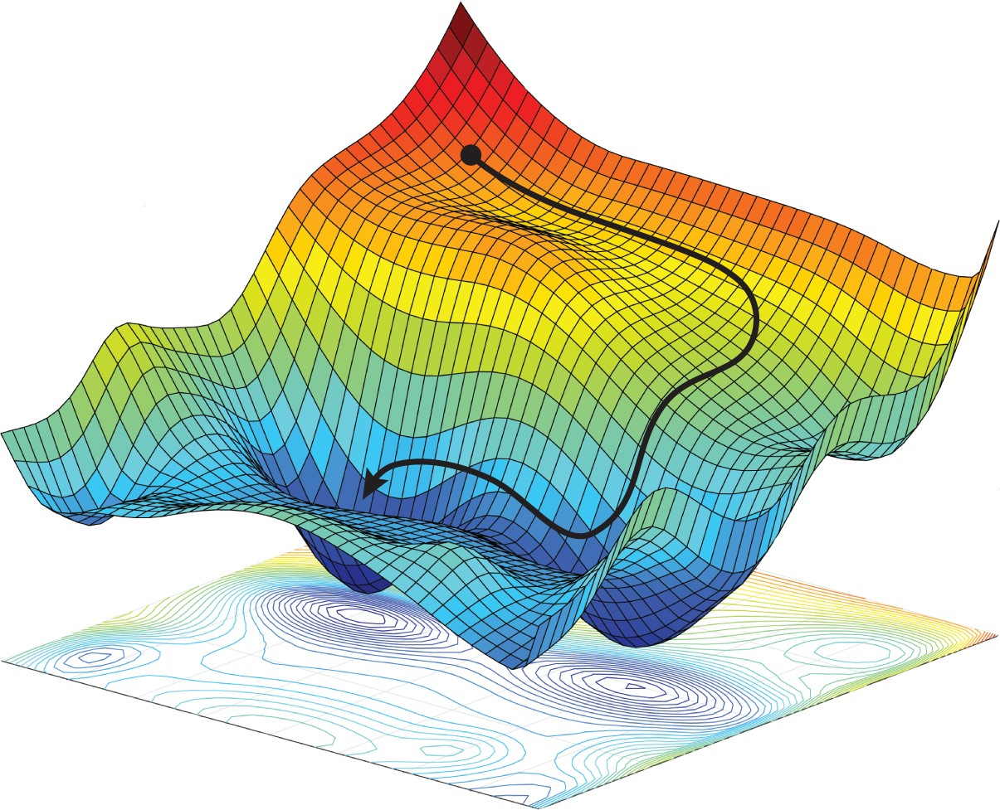
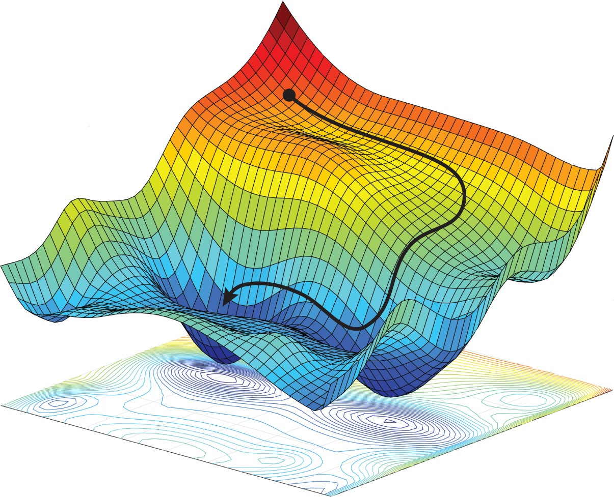
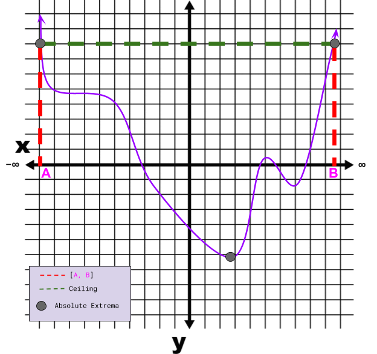
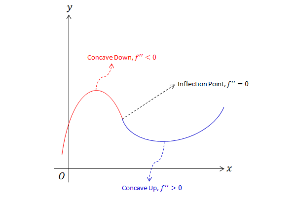
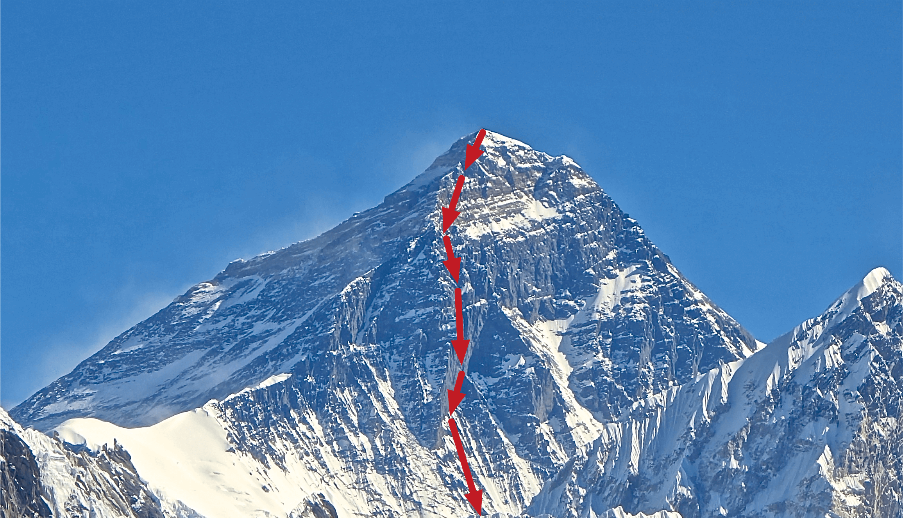
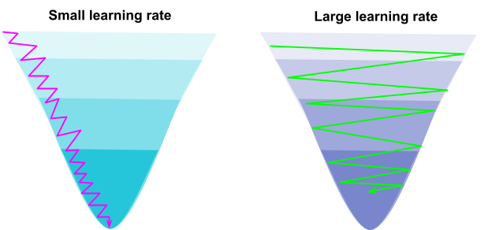
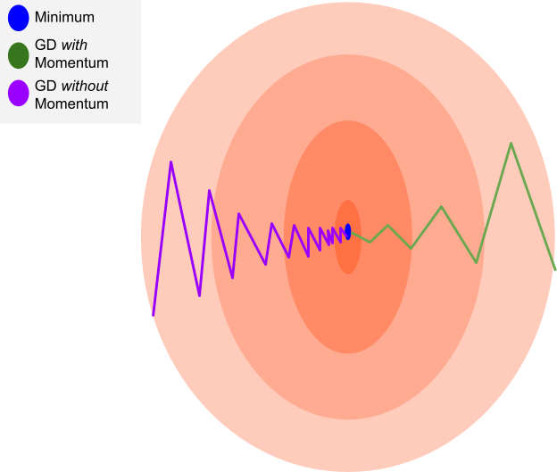
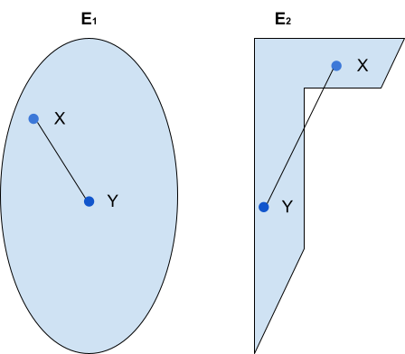

"Machine intelligence is the last invention that humanity will need to create" - Nick Bostrom

Figure: Finding the steepest descent down a 3-D surface.

Figure: Finding the steepest descent down a 3-D surface.
1. Optimization, Minima & Maxima
Optimization is the proccess of finding the best way to do something. Often times optimization problems can be reduced to finding the minimum or maximum of some objective function f(x).
Figure 1: Minima and Maxima of some function f.
Figure 2: On the closed interval [0, 4] the continuous function f(x) = -(x - 2)² has extreme values.
Figure 3: Violation of the extreme value theorem, because f is not continuous.
Absolute minimum - Let c be a point in the domain of a function f, then f(c) is the absolute minimmum if f(c) ≤ f(x) for all x in the domain.
Absolute maximum - Let c be a point in the domain of a function f, then f(c) is the absolute minimmum if f(c) ≥; f(x) for all x in the domain.
Local minimum - Let c be a point in the domain of a function f, then f(c) is the local minimmum if f(c) ≤ f(x) when x in the domain, and x is near c.
Local maximum - Let c be a point in the domain of a function f, then f(c) is the local maximum if f(c) ≥ f(x) when x in the domain, and x is near c.
The Extreme Value Theorem - Functions that are continuous on a closed interval always attain extreme values (absolute minima/ maxima).
So we know whether or not extrema exist, but how do we find them?
Critical number - Given some value c in the domain of a function f. The critical numbers of f
are such that f'(c) = 0 or f'(c) = undefined
Fermat's theorem - If a function f has a minimum or maximum at a value c
in the domain of f, and the derivate of f at c exists, then the derivative of f
at c is zero. In otherwords, if f has an extreme value at c then c is a critical
number.
Unfortunately, just because c is a critical number, that does not mean
a maximum or minimimum exists there! Moreover, even if it is a minimum or maximum how
do we know whether it is a local or absolute extremum?
The Closed Interval Algorithm - finding absolute extrema
You can update the polynomial coefficients and closed interval and the extrema will auto compute!
- Choose a function f
- Validate against the Extreme Value Theorem
- Find critical values of f in D
- Compute f(x) where x is all critical numbers and the interval endpoints.
Example: Let f be a degree 3 polynomial x³ + x² + x +
Let D be the closed interval [ , ] on which f is defined.
f'(x) = 6x²+x+2
6x²+x+2 = 0
x = , x =
| Critical Point (c) | f(c) | Within interval |
The Unboundedness Problem

Figure: Bounding a boundless curve.
Figure: Bounding a boundless curve.
So what if we fail the extreme value theorem; namely our objective function lies on an open interval? Create an artificial cieiling for the objective function. This will constrain the function both vertically and horizontally. The consequence of this heuristic is that we might choose the wrong cieling which could result in missing the extrema.
2. Concavity & Derivative Testing

Figure: Finding the inflection point on a curve.
Figure: Finding the inflection point on a curve.
Concave up - f''(x) > 0 for all x in some interval I.
Concave down - f''(x) < 0 for all x in some interval I.
Inflection Point - A point on a continuous curve such that the curve switches from concave up to concave down.
Second Derivative Test - If f'(x) = 0 and f''(x) > 0, then f has a local minimum at x; conversely, if f''(x) < 0
then f has a local maximum at x.
The First Derivative Test - finding local extrema
Increasing function - f'(x) > 0 on some interval.
Decreasing function - f'(x) < 0 on some interval.
- f' changes from positive to negative at a point c, then f has a local maximum at c.
- f' changes from negative to positive at a point c, then f has a local minimum at c.
- f' is positive to the left and right of c, or f' is negative to the left and right of c, then no local extrema exist at c.
So how is this related to optimization?
Recall that often times optimization problems can be restated as finding the minimum or maximum of some objective function. The previous theorems and definitions show how differentiation can be exploited to find both global and local extrema. Since Optimization → Finding a minimum/ maximum → differention, then by transitivity it can be seen that optimzation problems can be solved using differential calculus.3. Applications of Optimization
Example 1:
Imagine we have two positive numbers a and b such that a + b = c, where c is some other positive number. What is the minimum sum of the squares of a and b? in other words solve: min[a² + b²]
1) a + b = c → a = c - b | Note, since a & b are positive a and b are constrained to the closed interval [0, c]
2) S(a, b) = a² + b² [minimize S]
S(b) = (c - b)² + b²
S'(b) = -2(c - b) + 2b = 4b - 2c
Find the critical number, S'(b) = 0 → 4b - 2c = 0
b = c/2
Plugging b into 1) and solving for a:
a + c/2 = c → a = c/2
So the optimal solution is: (a, b) = (c/2, c/2)
Example 2:
Given a rectangular poster of fixed area A with margins on every side: margin left (ML), margin right (MR), margin top (MT), and margin bottom (MB). find the dimensions of the poster such that the printable interior area (PA) is maximized.
let S = MR + ML
let B = MT + MB
A = w * h → h = A/ w
PA(w, h) = (w - S) * (h - B)
PA(w) = (w - S) * (A/ w - B)
= A - w * B - (S * A)/ w + S * B
PA'(w) = -B + (S * A)/ w²
0 = -B + (S * A)/ w²
w = SQRT((S * A)/ B)
4. Numerical & Programmatic Derivatives
Why would we want to approximate a derivate using a numerical method?
- If we have some data set: \(D = \{(x_0, f(x_0)), (x_1, f(x_1)) ...\}\), then we only know the the underlying target function evaluated at particular x-values. Since the target function itself is unknown, symbolic analytic differentiation is not feasible.
- We are completely unaware of the underlying target function but still need to study rates of change.
- An exact formula may be present, but computing the derivative is too computationally expensive.
The Finite Difference Approximation
$$ f'(x) \simeq {{f(x + h) - f(x)} \over h} $$ Notice that if we take the limit as h approaches 0, then we have the exact definition of the derivative.3 Types of Finite Differences
- Forward Difference - Given the current data point \((x_i, f(x_i)) \) such that you are trying to approximate \(f'(x_i)\), take the next closest future data point \((x_{i+1}, f(x_{i+1})) \), the slope of the secant line between these data points approximates the derivative \(f'(x_i)\). $$ f'(x) \simeq {{f(x_{i+1}) - f(x_{i})} \over x_{i+1} - x_{i}} $$
- Backward Difference - Given the current data point \((x_i, f(x_i)) \) such that you are trying to approximate \(f'(x_i)\), take the next closest previous data point \((x_{i-1}, f(x_{i-1})) \), the slope of the secant line between these data points approximates the derivative \(f'(x_i)\). $$ f'(x) \simeq {{f(x_{i}) - f(x_{i - 1})} \over x_{i} - x_{i - 1}} $$
- Central Difference - Given the current data point \((x_i, f(x_i)) \) such that you are trying to approximate \(f'(x_i)\), take the next closest previous data point \((x_{i-1}, f(x_{i-1})) \) and the next closest future data point \((x_{i+1}, f(x_{i+1})) \), the slope of the secant line between the next closest previous data point and next closest future data point approximates the derivative \(f'(x_i)\). $$ f'(x) \simeq {{f(x_{i+1}) - f(x_{i - 1})} \over x_{i+1} - x_{i - 1}} $$
Example Using the Central Difference Method:
\(D = \{(-2, 4), (-1, 1), (0, 0), (1, 1), (2, 4)\}\)
\(f'(-1) \simeq \) ?
The underlying target function used to generate data: \(f(x) = x^2\)
\(f'(x) = 2x, f'(-1) = -2\)
Now assume we have no idea what the underlying target function is and we wish to calculate the \(f'(-1)\)
According to the central difference formula:
\(f'(x) \simeq {{f(x_{i+1}) - f(x_{i - 1})} \over x_{i+1} - x_{i - 1}}\)
\(f'(-1) = (0 - 4)/ (0 + 2) = -2\)
Thus we were able to calculate the derivative at x=-1 with zero error.
In general finite difference approximations will produce error!
\(f'(-1) \simeq \) ?
The underlying target function used to generate data: \(f(x) = x^2\)
\(f'(x) = 2x, f'(-1) = -2\)
Now assume we have no idea what the underlying target function is and we wish to calculate the \(f'(-1)\)
According to the central difference formula:
\(f'(x) \simeq {{f(x_{i+1}) - f(x_{i - 1})} \over x_{i+1} - x_{i - 1}}\)
\(f'(-1) = (0 - 4)/ (0 + 2) = -2\)
Thus we were able to calculate the derivative at x=-1 with zero error.
In general finite difference approximations will produce error!
Central Difference Differentiation in Python
Python's Numpy module has a function called gradient which implements the central difference method. I have included an example below:
import numpy as np
x = np.linspace(0,4,5) # [0, 1, 2, 3, 4]
dx = x[1]-x[0]
y = x**2 + 1
dydx = np.gradient(y, dx)
print(dydx) # [1, 2, 4, 6, 7]
5. Basic Differentiation Techniques
Product Rule
When \(u, v\) , are differentiable at \(x\), so is the product \(uv\): $$ {d \over dx}(uv) = {dv \over dx}(u) + {du \over dx}(v)$$
Example: Product Rule
\(u(x) = x^3 - cos(x)\)
\(v(x) = {1 \over x} + 19\)
\(f'(uv) = v'(x)(x^3 - cos(x)) + u'(x)({1 \over x} + 19)\)
\(v'(x) = {d \over dx}({1 \over x} + 19) = {-1 \over x^2}\)
\(u'(x) = {d \over dx}(x^3 - cos(x))\) = \(3 x^2 + sin(x)\)
\(f'(uv) = ({-1 \over x^2})(x^3 - cos(x)) + (3 x^2 + sin(x))({1 \over x} + 19) \)Chain Rule
Given \(f(z)\) differentiable at some point \(z = g(x)\) and \(g(x)\) is differentiable at x, then \(f(g(x))\) is differentiable at x and: $$ (f \circ g)'(x) = f'(g(x))g'(x)$$Example: Chain Rule
\(h(x) = e^{x^3 - x}\)
\(h(x) = f(g(x))\), where \(f(x) = e^x\) and \(g(x) = x^3 - x\)
\(f'(g(x)) = e^{x^3 - x}\)
\(g'(x) = 3x^2 - 1\)
Thus by the chain rule:
\(h'(x) = (3x^2 - 1)e^{x^3 - x} \)-
Linearization
For a differentiable function \(f\), the equation of the tangent line to \(f\) at \(x = a\) can be used to approximate \(f(x)\) for some \(x\) near \(a\): $$ L(x) = f(a) + f'(a)(x - a) $$ The function \(L\) is called the linearization of \(f\) at \(x = a\)Example: Linearization
Given:
\(f(x) = \sqrt[4]{x} + {x \over 4}^2\)
Find the linearization at \(x = 16\), then approximate \(f(16.09)\)
\(f(16) = {16}^{1 \over 4} + 4^2 = 18\)
\(f'(x) ={1 \over 4}x^{-3 \over 4} + {x \over 8}\)
\(f'(16) ={1 \over 4}16^{-3 \over 4} + {16 \over 8} = {1 \over (4){2}^3} + 2 = {1 \over 32} + {64 \over 32} = {65 \over 32}\)
\(L(x) = 18 + {65 \over 32}(x - 16)\)
\(L(16.09) = {65 \over 32}({9 \over 10}) = 18 + {117 \over 64}\)
6. Partial Derivatives & Gradients
An extension of differential calculus to functions with more than one variable.
Multivariate function
- A multivariate function \( f: \mathbb{R}^n \longrightarrow \mathbb{R} \) has a domain which consists of n-tuples, where \( n > 1 \).
$$ f(x_1, x_2, ..., x_n): \mathbb{R}^n \longrightarrow \mathbb{R} $$
Partial derivative
- computing the derivative of a multivariate function by holding all variables constant except one.
$$ {\partial f \over \partial x_i} = lim \text{ h}\ \rightarrow 0 \text{ }{{f({x_1}, ...,x_{i-1}, x_i + h, x_{i+1}, ..., x_n) - f(x)} \over h} $$
\(f(x, y) = 2x + y\)
\({\partial f \over \partial x} = ?\)
Holding y constant:
\({\partial \over \partial x} 2x + constant = 2\)
\({\partial f \over \partial x} = ?\)
Holding y constant:
\({\partial \over \partial x} 2x + constant = 2\)
Directional Derivative
For a physical description of the directional derivative imagine
\(Z = f(x, y)\) is the elevation at some x, y location on a mountain. Then \(f(x*, y*)\) = the
elevation at point \(x*, y*\) and the directional derivative represents the instanataneous rate
of change of the elevation @ \(x*, y*\) going off in some direction u, where u is a vector of the
form \(u = u_{1}i + u_{2}j\). the i component of the vector
u represents traversal in the x direction and the j component represents traversal in the y direction
Gradient
- The generalization of the derivative to multivariate functions. The gradient is the collection of the partial derivatives. A \( 1 x n\) dimensional row vector.
$$ \nabla_xf = {df \over dx} = [{\partial f(x) \over \partial x_1}, {\partial f(x) \over \partial x_2}, ..., {\partial f(x) \over \partial x_n}] $$
6. Automatic Differentiation & Back Propagation
Back propagation is a special case of automatic differentiation which is a numerical method (different from symbolically computing the gradient or using finite differences) for evaluating the gradient of a function by working with intermediate values and applying the chain rule.
Back Propagation Video
7. Gradient Descent & Convex Optimization
Gradient Descent

Figure: Finding the steepest descent down a mountain.
Figure: Finding the steepest descent down a mountain.
Attempts to find the minimum of some real value function f(x). The assumptions are made that f is differentiable and we cannot find a closed form analytic solution. Recall that the gradient points in the direction of steepest descent. Gradient descent exploits the fact that f(x_0) decreases fastest if it moves in the direction of the negative gradient. Gradient descent can be slow as it approaches the minimum.
Learning rate

Figure: The small learning rate descends slowly, while the large learning rate may not converge!
Figure: The small learning rate descends slowly, while the large learning rate may not converge!
Also called the "step size", if a step size is chosen that is too small, convergence will be slow. If the value is too large then the gradient descent algorithm might not converge properly. Adaptive gradient methods update the learning rate depending on the atrributes of the function. A simple adaptive gradient heuristic:
- If the function value increases after the gradient step, undo the step and try a lower step-size
- If the function value decreases after the gradient step, undo the step and try a larger step-size
Gradeint Descent With Momentum

Figure: Notice how there are fewer oscillations using gradient descent with momentum as the minimum is approached. This equates to faster convergence.
Figure: Notice how there are fewer oscillations using gradient descent with momentum as the minimum is approached. This equates to faster convergence.
If regions of the optimization surface are not scaled well, gradient descent can be very slow. By introducing memory into the algorithm so that the state from the previous iteration can be recalled, the time costly oscillations that occur near the minimum are dampended and consequently convergence happens more quickly. Gradient descent with momemtum is also useful for approximations of the gradient, becuase it is able to average out noisy estimates of the gradient.
Stochastic Gradient Descent

Figure: Notice how gradient descent always traverses the local minima; whereas stochastic gradeint descent oscillates around the minima.
Computing the gradient can be very expensive and thus approximating a gradient is sufficient as long as it is pointing in approximately the same direction. Stochastic refers to the fact that the true gradient is unknown and that we only have a noisy approximation. This is an example of a batch optimization method, which means the entire training dataset should be used. Approximate gradients should be used in practice because of implementation constraints, namely CPU/ GPU memory & computational running time.
Convexity

Figure: \(E_1\) is convex, while \(E_2\) is not convex.
Figure: \(E_1\) is convex, while \(E_2\) is not convex.
Convex Sets C
$$ \forall x, y \in C \text{ and }\ \forall \lambda \in \mathbb{R} \text{ such that }\ 0 \leq \lambda \leq 1 \text{, }\ \lambda * x + (1 - \lambda) * y \in C $$
Convex Functions
- A convex function \( f_{cvx}: \mathbb{R}^D \longrightarrow \mathbb{R} \) has a domain which is a convex set! The function \( f_{cvx}\) is convex if,
\(\forall x, y\) in the domain of \( f_{cvx}\) and \(\forall \lambda \in \mathbb{R} \text{ such that }\ 0 \leq \lambda \leq 1\) the following relating holds:
$$ f_{cvx}(\lambda * x + (1 - \lambda) * y) \leq \lambda * f_{cvx}(x) + (1 - \lambda) * f_{cvx}(y)$$
Sources
- James Stewart - Single Variable Calculus, Early Transcendentals
- Thomas' - Calculus
- Mathematics for Machine learning - Marc Peter Deisenroth, A. Aldo Faisal, Cheng Soon Ong
- University Calculus: Early Transcendentals - Joel R. Hass, Maurice D. Weir, George B. Thomas
- Mathematical Optimization - Stanford Junior University